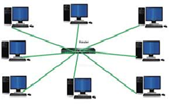
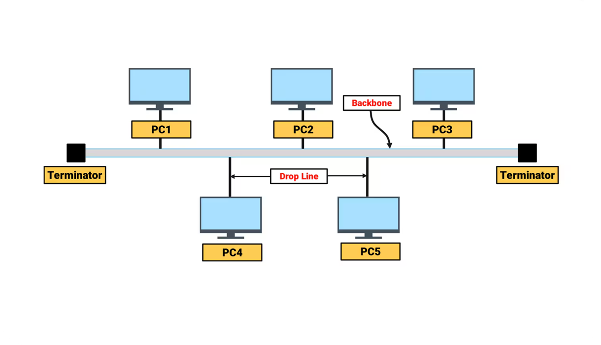
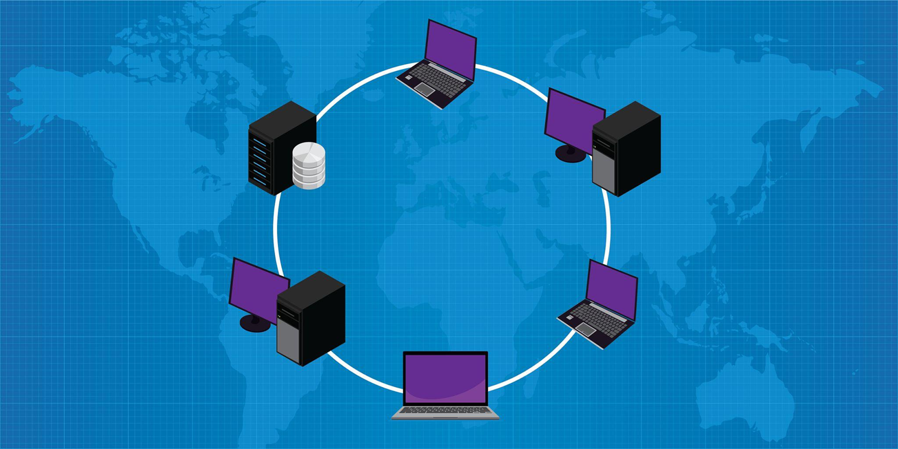
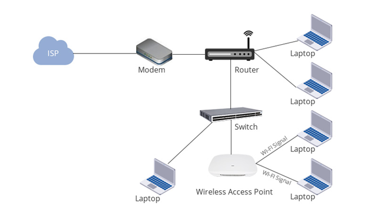

Pertemuan 1
Pengenalan Jaringan Komputer
Jaringan komputer adalah sekumpulan dua atau lebih perangkat yang saling terhubung untuk berbagi data, informasi, dan sumber daya. Dalam dunia modern, hampir semua aktivitas digital memanfaatkan jaringan komputer.
Contohnya ketika kita mengakses internet, mengirim email, menonton video online, atau bermain game online. Semua aktivitas tersebut memerlukan jaringan komputer agar perangkat dapat saling berkomunikasi.

Ilustrasi Jaringan Komputer
- Berbagi koneksi internet
- Berbagi file dan dokumen
- Komunikasi jarak jauh
- Mendukung pembelajaran online
Topologi Jaringan
Topologi jaringan adalah bentuk atau pola hubungan antar perangkat dalam jaringan komputer.
1. Topologi Star

Topologi star adalah topologi yang paling banyak digunakan saat ini. Pada topologi ini semua perangkat terhubung ke satu perangkat pusat seperti switch atau hub.
2. Topologi Bus

Topologi bus menggunakan satu kabel utama sebagai jalur komunikasi yang menghubungkan semua perangkat dalam jaringan.
3. Topologi Ring

Pada topologi ring, setiap perangkat terhubung membentuk lingkaran sehingga data mengalir dari satu perangkat ke perangkat lain.
Teknologi WiFi
WiFi adalah teknologi jaringan nirkabel yang memungkinkan perangkat terhubung ke internet tanpa menggunakan kabel.

WiFi bekerja menggunakan gelombang radio untuk mengirimkan data antar perangkat seperti laptop, smartphone, dan access point.
- Tidak memerlukan kabel
- Mudah digunakan
- Mendukung perangkat mobile
- Fleksibel untuk berbagai tempat
Video Pembelajaran
Mini Quiz
1. Jaringan komputer digunakan untuk...
2. Topologi yang paling banyak digunakan adalah...